Замена в сборе
Снимается вся магистраль, ставится новая — вместе с теми участками, которые ещё живые. Быстро для сервиса и дорого для вас, особенно если оригинала на вашу машину уже не найти.
Автосервис и запчасти · Кировский район
Honda и Subaru — наш профиль, но берём и остальных японцев. Выхлопная система, тормоза с проточкой дисков, ходовая, электрика и сигнализации. И свой магазин запчастей: ту деталь, которую нашли, можно тут же и поставить.
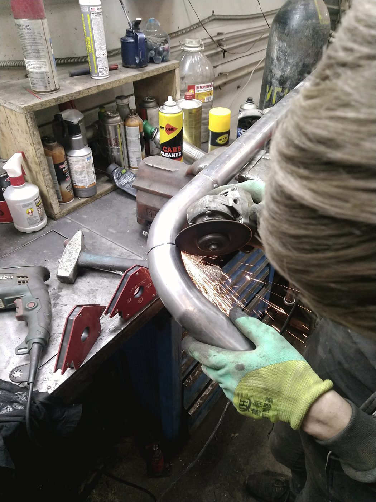
Выхлопная система
Прогорела банка, треснула гофра, отвалился резонатор — вариантов всегда два, и они сильно отличаются по деньгам. Мы делаем второй и говорим об этом сразу.
Снимается вся магистраль, ставится новая — вместе с теми участками, которые ещё живые. Быстро для сервиса и дорого для вас, особенно если оригинала на вашу машину уже не найти.
Вырезаем прогоревший участок, гнём и варим новую трубу под вашу машину, ставим гофру или банку — и оставляем то, что ещё отработает. Дольше по времени, заметно дешевле по сумме.
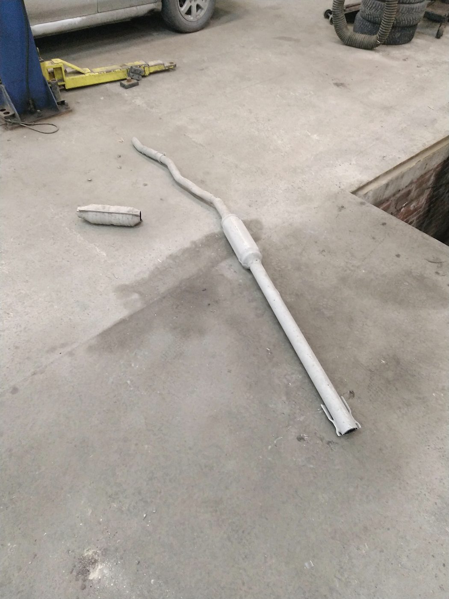
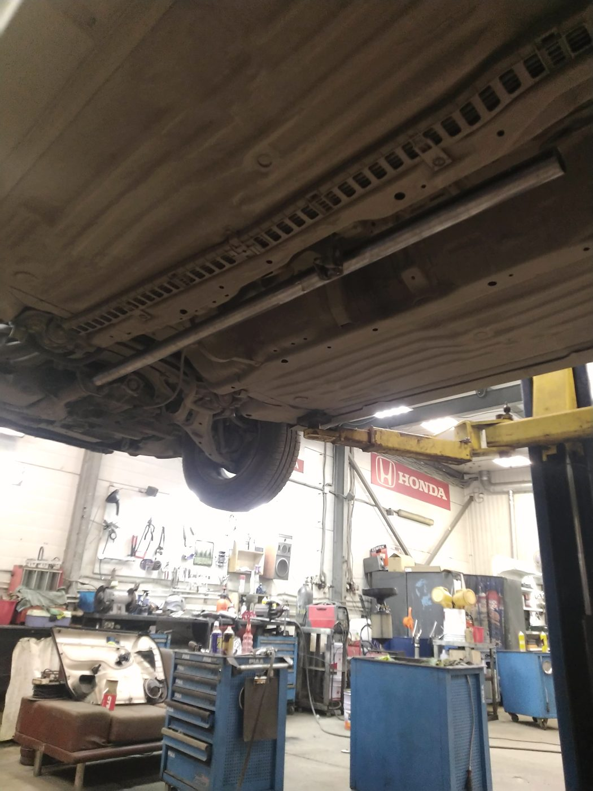
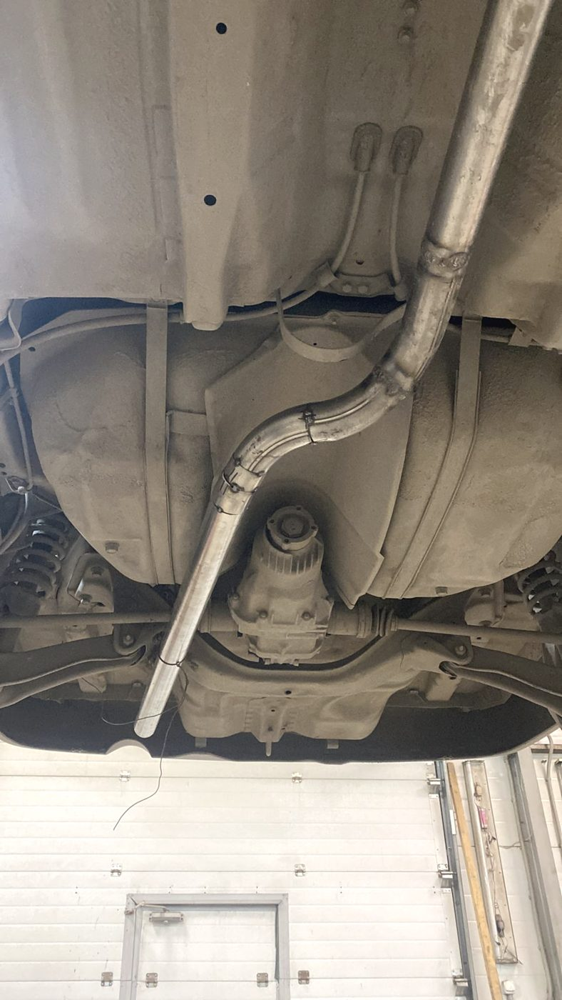
Слева — труба, согнутая под конкретную машину. Дальше она же на месте: по такой работе видно, что ставилось не «примерно подходящее».
Тормоза
Если руль или педаль бьют при торможении, дело обычно не в колодках, а в биении диска. Пока толщина позволяет, диск протачивается прямо на машине и работает дальше — это дешевле пары новых и честнее, чем менять «на всякий случай». Если запас толщины уже выбран, мы скажем об этом и не станем точить в ноль.
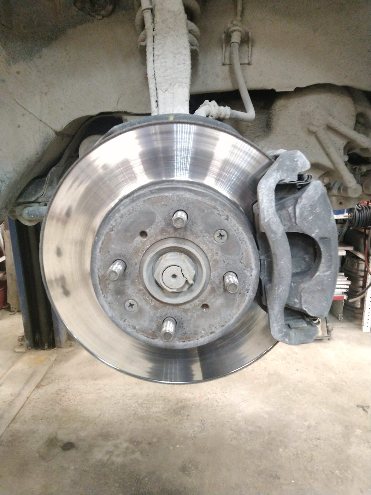
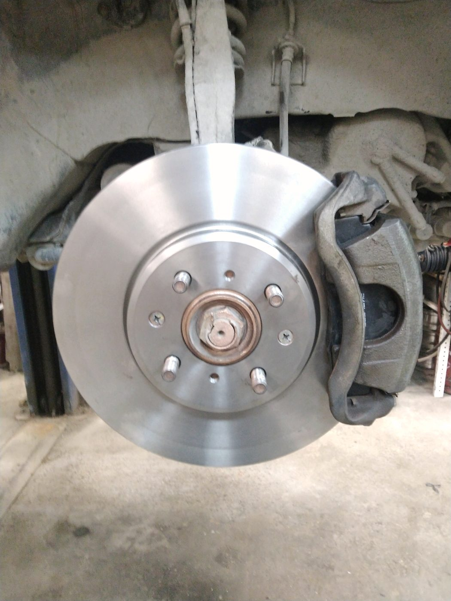
Что ещё делаем
Стойки, рычаги, сайлентблоки, ступицы. Ремонт стоек — отдельно: не всё нужно менять в сборе.
Бензиновые моторы, компьютерная диагностика. Вибростенд помогает поймать то, что на подъёмнике молчит.
Электронные системы, стартеры и генераторы, оптика. Сложные машины — гибриды и новые Lexus — тоже берём.
Установка и настройка, автозапуск. Обходим иммобилайзер без вшития ключа, штатный брелок остаётся рабочим.
Ремонт реек, обслуживание кондиционера, замена масла и спецжидкостей.
Acura, Honda, Hyundai, Infiniti, Isuzu, Kia, Lexus, Mazda, Mitsubishi, Nissan, Subaru, Suzuki, Toyota. Подберём и контрактные.
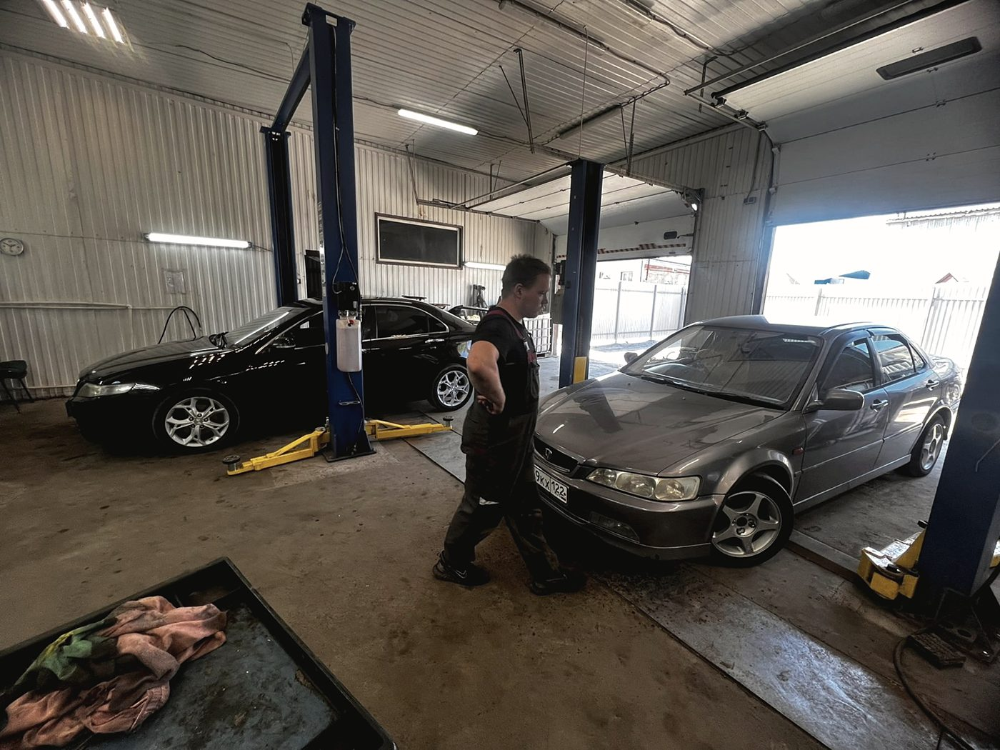
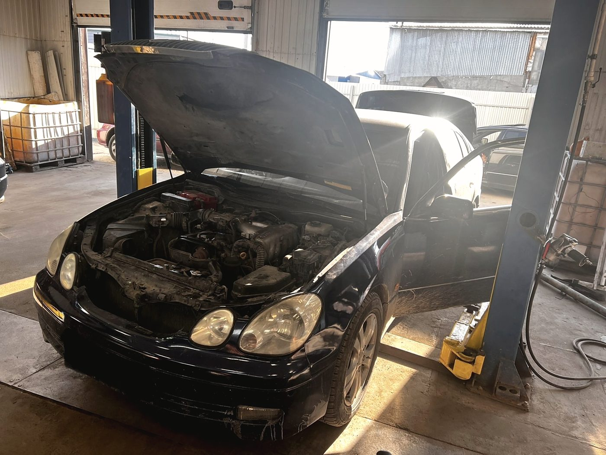
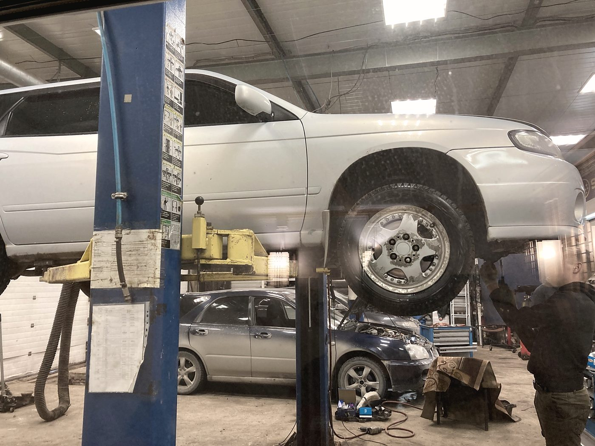
Честно
«Ни разу не пытались навязать чего-то лишнего, а советуют только то, что действительно необходимо»
Никита · постоянный клиент больше двух лет · отзыв в 2ГИС, 30 ноября 2025
У многих сервисов в округе 4,8 и 4,9, у нас 4,4 по 136 отзывам. Мы работаем давно, машин через нас прошло много, и недовольные среди них были. Прочитайте отзывы целиком, а не только оценку: там видно, из-за чего именно.
Мы работаем со вторника по субботу, с 10:00 до 20:00. Это неудобно тем, кто может только в выходной, — и лучше вы узнаете об этом здесь, чем приехав к закрытым воротам.
Отзывы · 4,4 из 5 по 136 оценкам в 2ГИС
«Взялись за установку без проблем, хотя многие установщики категорически отказывались»
Кирилл · сигнализация на Lexus · отзыв в 2ГИС, 17 ноября 2024
Я их постоянный клиент уже больше двух лет, и за это время они помогли мне с двумя моими хондами. Ребята не просто чинили, а действительно вникали в каждую проблему: всегда готовы проконсультировать, объяснить и помочь найти запчасти, даже подобрать и заказать контрактные.
Никита · Honda Avancier · 30 ноября 2025
Обошли иммобилайзер без вшития ключа. Все функции бесключевого доступа остались со штатного брелока. Всё сделали быстро, качественно, недорого. Спасибо автоэлектрику за работу.
Кирилл · 17 ноября 2024
Так как машина новая, гибрид, на установку потребовалось чуть больше времени, мастер справился с задачей. Сигнализация установлена, автозапуск работает. Персонал дружелюбный.
Павел · Toyota Harrier · 21 ноября 2024
Хороший автосервис. Внимательное отношение к клиенту и к автомобилю. Не первый год здесь ремонтируется мой авто, и всё отлично.
Дмитрий · 20 июня 2026
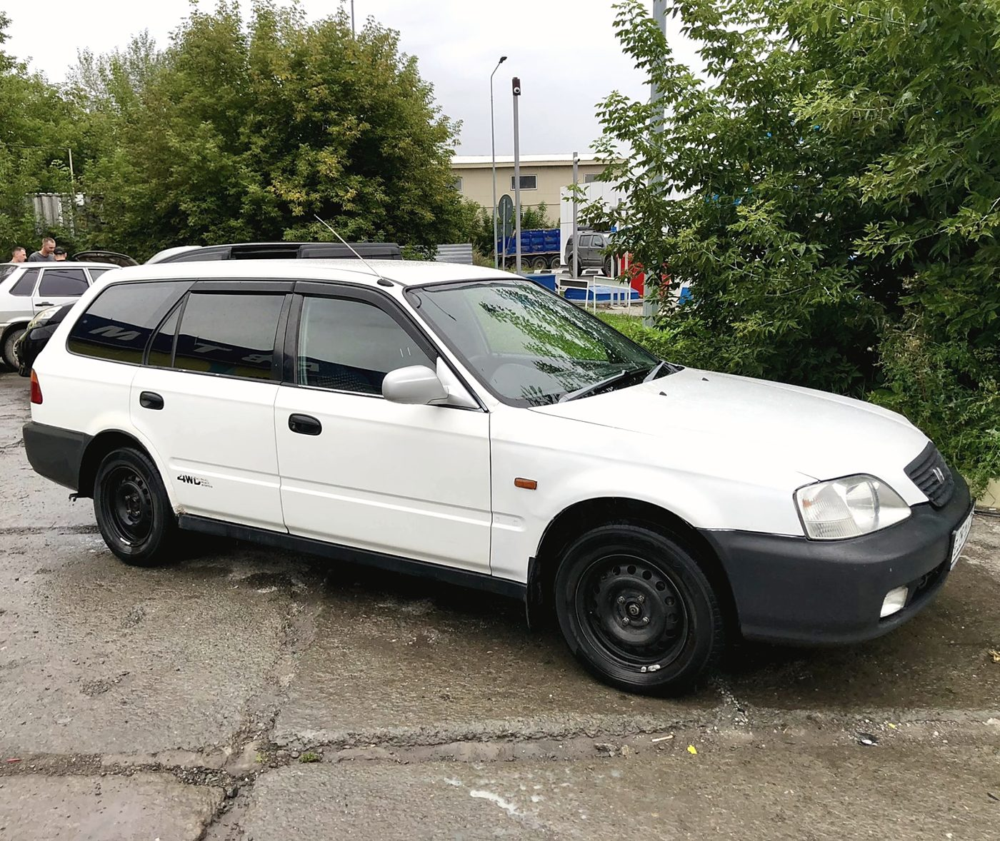
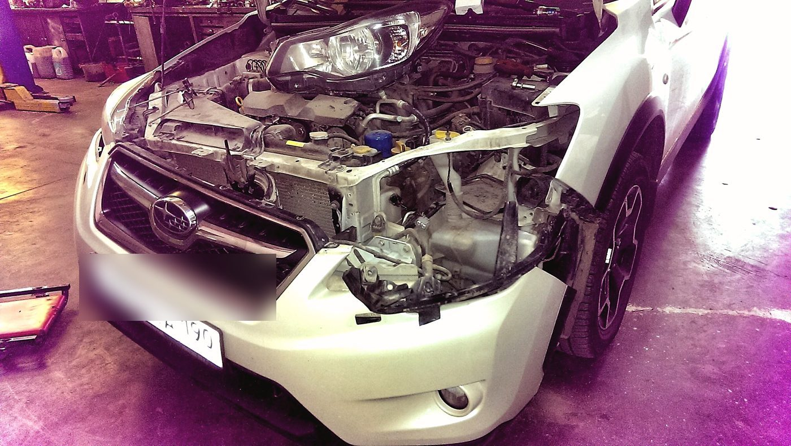
Контакты